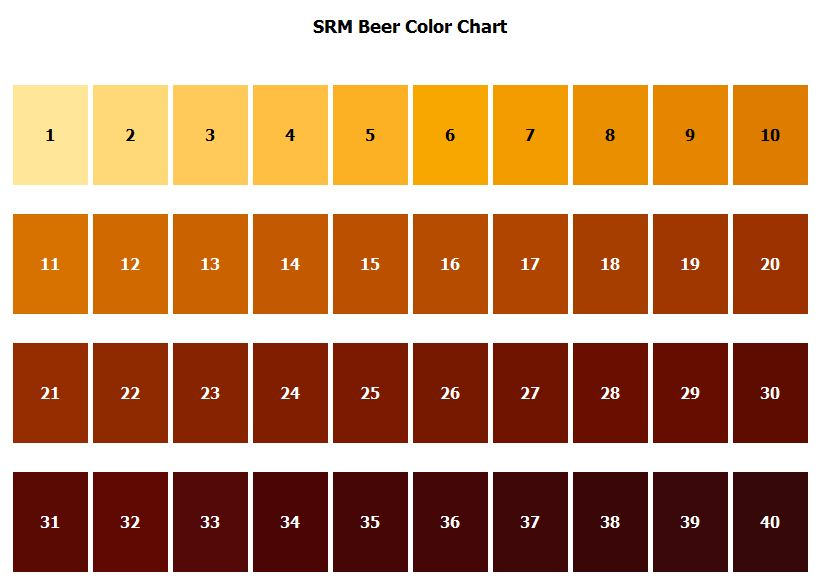

Dégustation
Publié le 27 février 2017

Afin de réussir une dégustation, quelques règles sont importantes :
- Ne pas être pressé et soyez à l’aise de partager vos impressions, il n’y a pas de bonne ni de mauvaise réponse
- Laissez les gens gouter et n’imposez pas vos observations trop rapidement
- Utiliser le bon type de verre et le rincer à l’eau froide
- Servir la bonne quantité de bière à la bonne température
Est-ce qu’elle s’accroche au verre ? Ceci est un signe de fraicheur. Est-ce que les bulles sont petites ou grosses ? Quel est son SRM ?
 Faites tourner lentement votre verre pour faire remonter les arômes avant de humer votre bière. Laissez la bière rouler dans votre bouche afin qu’elle entre en contact avec toute les parties de la langue. Quelles sont vos impressions ? Voici quelques familles d’odeurs et de goûts : Houblonné Céréales Levures : on peut apprécier des odeurs de pain chaud que l'on ramène souvent aux arômes de céréales. Ces arômes de levure sont perceptibles dans les bières non filtrées et/ou refermentées en bouteille. Fruité : Citron, pomme, banane... sont des odeurs ou goûts qui s'apprécient généralement dans les bières blanches ou blondes et proviennent souvent des levures de fermentation. Les brunes ont plus des arômes de fruits rouges : cassis, framboise, fraise.... Floral : difficile à dissocier du fruité. Odeurs ou goûts de rose, violette ou encore géranium, c'est ce que l'on appelle le bouquet. Torréfaction : ces arômes ne s'apprécient que dans les brunes foncées. Ils proviennent de la torréfaction plus ou moins longue des grains-d'orge entrant dans la composition des bières. Caramélisé : Cette odeur ou ce gout est plus sensible dans les bières rousses et brunes.{kind=link}
Saveurs désagréables
Acétaldéhyde : pomme verte. Causé par une fermentation en mauvaise santé ou incomplète. Par exemple, pas assez de levure, pas assez d’oxygène ou la fermentation arrêtée trop tôt. Aigre (bière acide) : proviens de bactéries produites par l’acide lactique. Alcoolique : Présence d'alcools de fusel d'ordre supérieur (isoamyle, propanol butanol, isobutanol). Sous-produits de fermentation perceptible à partir d’une certaine concentration. Causé par une température de fermentation trop haute. Également pas suffisamment de levure et d’oxygène. Ou encore, être en contact avec la levure de la fermentation primaire pendant plusieurs mois. Astringence : Sensation en bouche telle qu’une poche de thé dans la bouche. Causé par les tanins, qui sont des polyphénols présents dans l’écorce des grains si la température de l'empâtage est portée à plus de 76°C ou un pH trop élevé pendant le rinçage. Diacetyl : gout de beurre ou de butterscotch. Sous-produits de la fermentation. Beaucoup plus présent dans les Lagers, puisqu’elles sont fermentées à basse température, ce qui ralentit sa réabsorption en fin de fermentation. Peut également être causé par de l’équipement mal lavé, telles des lignes de fut. Diméthylsulfure : saveur de maïs cuit ou en crème, surtout détectable dans les bières légères. Créé lorsque le mout est chauffé lors de l’empâtage et s’évapore lors de l’ébullition. Il ne faut donc pas le recouvrir. Avec un système de ventilation, faire attention que la condensation ne retombe pas dans le chaudron. Demi-vie de 40 minutes à 100°C. Donc si l’ébullition dure 60 minutes, il sera éliminé à 65%, tandis que si l’ébullition dure 90 minutes, il sera éliminé à 80%. Les grains 2 rangs en produisent moins que les grains 6 rangs et Pilsner. Refroidir rapidement le mout après l’ébullition aide à le limiter. Esters : Saveurs de fruits (bananes, roses, poires, etc.) produits au début la fermentation. S’il est présent en trop grande quantité, il est possible de retrouver des saveurs de solvants. Une température de fermentation trop haute peut créer cette saveur désagréable, ainsi qu’une quantité insuffisante de levures dans un mout mal oxygéné. Idéalement, assumant la bonne quantité de levures dans un mout bien oxygéné, il est avantageux de commencer la fermentation à une température légèrement inférieure à celle de fermentation prévue. Chaque type levure possède une quantité différente d’enzyme appelée acetate transferase (AAT), qui contrôle la production d’esters. Les Lagers dégagent généralement moins d’esters. Oxydation : La bière oxydée a une odeur vieillie de carton, de papier, de vin ou de cerise. Causé par une bière qui a été exposée à l’oxygène après la fermentation. Activé lorsque le composé trans-2-nonenal entre en contact avec l’oxygène. Ce composé à un seuil de détection très faible, c’est pourquoi une infime quantité d’oxygène peut le rendre détectable. Phénolique : gout variant, à faible quantité, clou de girofle et banane, ou à plus grande quantité, épice ou fumé, médicinal ou de pansements. Les levures belges, Allemande et Britannique en produisent plus. Également, ce gout peut être causé par des levures sauvages. L’eau chlorée peut également réagir avec les phénols pour produire des chlorophénol.